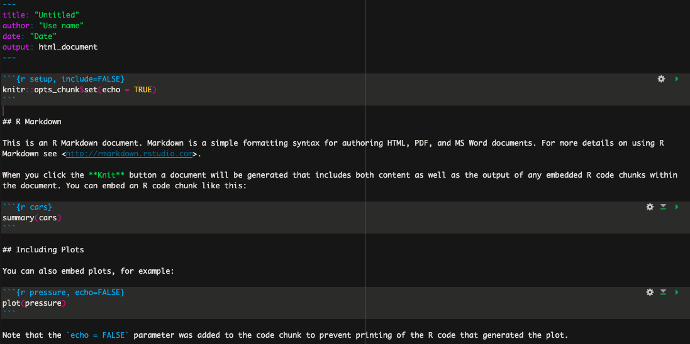

Chapitre 3 Utiliser RStudio et R Mardown
3.1 Pourquoi utiliser R Markdown
Plusieurs préfèrent rédiger leurs scripts dans des fichiers de type R Markdown plutôt que R Script pour diverses raions. Je recommande personnellement d’utiliser R Markdown pour les raisons suivantes :
Ce type de fichier permet de facilement annoter son script entre les sections de codes qui sont comprises dans un bloc (“chunk” en anglais).
Un script bien annoter permet non seulement au scripteur de s’y retrouver facilement mais aussi de partager son code à ses collègues ou même publiquement.
En effet, il est de plus en plus commun de retrouver dans les articles scientifiques un lien vers les scripts générés et uilisés par les auteurs de l’article afin d’analyser leurs données.
Mais aussi, les blocs de codes permettent d’exécuter seulement certaines sections de code à la fois, ce qui ultimement permet de mofidier puis exécuter seulement ces sections de code sans avoir à re-exécuter l’entièreté du script.
3.2 Utliser R Markdowm
La première étape consiste donc à créer un nouveau document de type R Mardown. Pour cela, ouvrez RStudio, puis cliquez sur Fichier. Dans le menu déroulant sélectionner Nouveau Fichier puis R Markdown....
Dans la nouvelle fenêtre vous pouvez donner le titre que vous voulez à votre nouveau document. Par défault le nouveau document affiche une petite introduction ainsi que des exemples tel que sur l’image ci-dessous :

Ces informations ne sont pas pertinentes et vous pouvez supprimer l’ensemble du texte sous l’entête (l’entête correspond à la section délimitée par les trois tirets ---).
3.2.1 Bloc de codes
Dans R markdown, les lignes de codes à exécuter doivent être comprises dans un bloc de code. Le texte non compris dans un bloc n’est donc pas considéré comme du code, ce qui permet d’annoter minutieusement votre script entre les blocs afin de vous y retrouver facilement.
Un bloc de code R doit toujours débuter avec les caractères suivants : ```{r}
et se terminer avec les caractères suivant : ```. Un bloc de code ressemble donc à ceci :
Un bloc de code peut être inséré avec l’une des façons suivantes :
- le raccourcit clavier :
Ctrl+Alt+I - tapper manuellement les caractères délimitants (
```{r}```) - l’onglet
CodepuisInsert chunk - le bouton vert avec le petit c et signe de plus en haut à droite.
Un fois votre code rédigé dans le bloc, vous pouvez exécuter l’entièreté du code contenu dans ce block en appuyant sur le bouton vert en haut à droite du code ( ▶ ).
Il est possible d’insérer des blocs de code de différents languages de programmation tels que Bash et Python, il suffit de remplacer le r entre les accolades par le nom du programme utilisé.
Plusieurs autres options peuvent être appliqués sur les blocs, pour plus d’informations je vous recommande de consulter la documentation disponible sur internet.
3.2.2 Définir le répertoire de travail par défault
Généralement, avant de commencer à analyser des données, il faut indiquer à R où se trouve les données sur notre ordinateur. Il existe plusieurs manières de procéder, dont notamment, spécifier au début du script un répertoire/dossier de travail par défault. Pour ce faire, une suffit d’utiliser la commande setwd() comme présenté sur l’exemple ci-dessous. Le texte entre les guillemets de l’exemple doit simplement être modifié pour le vrai chemin vers votre répertoire/dossier de travail. Une fois le repertoire de travail définit par défaut de la sorte il n’est pas nécessaire d’inclure le chemin vers les fichiers que l’on veut importer tant qu’il se trouve dans le répertoire spécifié. Cela s’applique aussi à la sauvegarde de tableaux, figures ou autres.
La fonction getwd() affiche quant à elle le répertoire de travail.
3.2.3 Importer des données
Pour importer un fichier en format comma seperated value (csv) dans R on utilise la commande read.csv avec les arguments suivants :
file: Spécifier le nom du fichierheader: Indiquer si la première ligne de notre tableau correspond au nom des colonnes (valeurs possible TRUE/FALSE)row.names: Indiquer quelle colone de notre tableau correspond au nom des rangéssep: Indiquer quel caractère doit servir de séparateur pour les colonnescheck.name: Ne pas systématiquement remplacer le trait d’union par un point (valeurs possible TRUE/FALSE)
Code
Pour un tableau en format tab delimited (souvent avec l’extension .tsv) on peut utiliser la fonction read.table et spécifier \t comme séparateur.
3.2.4 Manipulation de variables et types de données
Code
val1 = 5 # attribuer la valeur d'un nombre entier
val2 = 3.2 # attribuer la valeur d'un nombre décimal
message = "Hello world" # attribuer une valeur non numérique sous forme de caractères
print(val1) # Affiche la valeur de val1
class(message) # indique le type variable
# Puisque nos variable val1 et val2, nous pouvons les utiliser dans des équation mathématique
produit_v1v2 = val1 * val2
produit_v1v23.2.5 Structures des données
Vecteurs
Un vecteur est une structure de base qui contient plusieurs valeurs d’un même type.
Code
vec = c(1, 2, 3, 4, 5) # Création d'un vecteur
print(vec) # Afficher le vecteur
length(vec) # Longueur du vecteur / combien d'éléments il contient
sum(vec) # Somme des éléments (seulement si les éléments sont numériques)
mean(vec) # Moyenne des éléments (seulement si les éléments sont numériques)
sd(vec) # Écart-type des éléments (seulement si les éléments sont numériques)Listes
Une liste peut contenir des éléments de types différents.
Code
Matrices
Une matrice est un tableau diposé en m rangées et n colonnes qui contient des valeurs d’un même type (généralement numérique et optimisées pour les calculs mathématiques).
Tableaux de données / data frames
Les tableaux de données peuvent être hétérogènes et sont utiles pour le stockage de données.
3.2.6 Exploration de données
R comprend plusieurs jeux de données qui sont souvent utilisés comme exemple afin de démontrer les fonctions de R (liste complète). Aujourd’hui nous utiliserons le jeux de données penguins_raw qui comprend différentes données (longueur des nageoires, masse corporelle, dimensions du bec et sexe) de trois espèces de manchots retrouvés sur les trois Îles de l’archipel Palmer en Antarctique.
Code
Sélection de colonnes et utilisation de filtres
Code
df_manchot$Island # Sélectionner la colonne Island
unique(df_manchot$Island) # Valeurs unique présente dans la colonne Island
# Garder uniquement les manchots de l'ile Dream
df_manchot_dream = subset(df_manchot, Island == "Dream")
# Garder uniquement les petits manchots
df_manchot_petit = subset(df_manchot, `Body Mass (g)` < 3000)
# Utiliser plusieurs conditions pour garder uniquement les petits manchots de l'île Dream
df_dream_petit = subset(df_manchot, Island == "Dream" & `Body Mass (g)` < 3000) Combiner des tableaux de données
Lorsque nous avons plusieurs jeux de données contenant des informations complémentaires, nous pouvons les combiner avec la fonction merge().
Code
df_info_gen = data.frame(Name = c("Marie Curie", "Lise Meitner", "Barbara McClintock"),
Born = c(1867, 1878, 1902),
Nobels = c("Physics - Chemistry", NA, "Physiology or Medicine"))
df_info_educ = data.frame(Name = c("Marie Curie", "Lise Meitner", "Barbara McClintock"),
Study = c("Physics - Chemistry", "Nuclear physics", "Cytogenetics"),
Institutions = c("University of Paris", "University of Vienna", "University of Missouri"))
# Fusionner les deux tables sur la colonne "ID"
df_info_all = merge(df_info_gen, df_info_educ, by = "Name", all = TRUE)Explication :
by = "ID": Spécifie que la fusion se fait sur la colonneNameprésente dans les deux jeux de données.
all = TRUE: Effectue une jointure externe (outer join), conservant toutes les lignes des deux data frames, même si elles ne correspondent pas parfaitement. Siall = FALSE(par défaut), seuls les ID présents dans les deux tables sont conservés (inner join).all.x = TRUEconserverait toutes les lignes dedf_info_gen, etall.y = TRUEcelles dedf_info_educ(jointure gauche/droite).
Visualisation avec ggplot2
Code
install.packages("ggplot2") # Installer ggplot2 si nécessaire
library(ggplot2) # Charger la bibliothèque
# Pour comparer la masse corporelle (Body Mass (g)) en fonction des espèces un peu générer un boxplot (boîtes à moustaches)
graph_bmi_species = ggplot(data = df_manchot, aes(x = Species, y = `Body Mass (g)`)) +
geom_boxplot(alpha = 0.3, outlier.shape = NA) +
geom_jitter(size = 3, ) + # Rajouter des points pour voir la distribution des valeurs
labs(title = "Body Mass (g) per species", x = "Species", y = "Body Mass (g)") + # Titres et légendes
theme_minimal() # Application d'un thème minimaliste
# Relation entre la masse corporelle (Body Mass (g)) et la longueur de la nageoire (Flipper Length (mm))
graph_bmi_flipp = ggplot(data = df_manchot, aes(x = `Flipper Length (mm)`, y = `Body Mass (g)`)) +
geom_point(color = "lightblue", size = 3) + # Ajout de points en bleu
geom_smooth(method = "lm", se = FALSE, color = "orange") + # Ajout d'une droite de régression
labs(title = "Relation entre la masse corporelle (g) et la longueur de la nageoire (mm)",
x = "Masse corporelle (g)", y = "Longueur de la nageoire (mm)") + # Titres et légendes
theme_minimal() # Application d'un thème minimalisteExporter des données
Code
# Exporte un tableau de données
write.csv(x = df_info_all, file = "data_womenscience.csv", row.names = FALSE) # Sauvegarde du data frame sous format CSV
# Exporter des graphique en PDF (vectoriel)
ggsave(filename = "graph_bmi_flipp.pdf", plot = graph_bmi_flipp, width = 8.5, height = 4, units = "in")
# Exporter des graphique en SVGpour l'insérer dans word (vectoriel)
ggsave(filename = "graph_bmi_flipp.svg", plot = graph_bmi_flipp, width = 8.5, height = 4, units = "in")